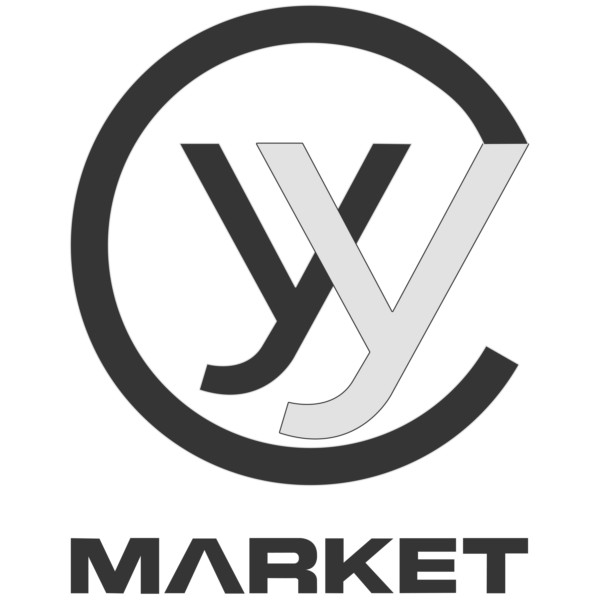

Brand guidelines are the rulebook for how a brand looks and sounds. They keep every logo, colour, font and photo consistent so shoppers recognise YYC Market everywhere.
Use them for logos and signage, social media posts, business cards, web banners and letterhead print documents.
The open ring is a C for Calgary. Two overlapping Ys spell YYC, with the lime front Y as the fresh, growing heart of the market. Plum brings depth and craft, and the wide MARKET wordmark reads like a painted stall sign.
Keep clear space of at least x (the height of a letter in MARKET) on all sides. Minimum width: 24 mm print, 90 px screen.
Full colour
Mono purple
Mono green

Black and white
Full colour
Mono purple
Mono green
Black and white
Do not stretch, crop, rotate, add effects, recolour off-palette or place the logo on busy backgrounds.
Every weekend, local farmers, bakers and makers bring the season's best to one place.
CMYK values are conversions; proof on final print stock. Never set lime text on white.
Cropped arcs and frames from the logo's C.
Bands and dividers at the Y angle.
Texture for bags, packaging and web backgrounds.
Natural light, close-up produce, real vendors and hands, bright true colour.
bcfm.org: natural, bright images focused on produce quality and growers.
bcfarmersmarket.org: fill the frame, shoot close, capture texture and the human touch.
unsplash.com: sharp, saturated, shallow depth of field, clean background.
Prepared for YYC Market, Calgary · 2026